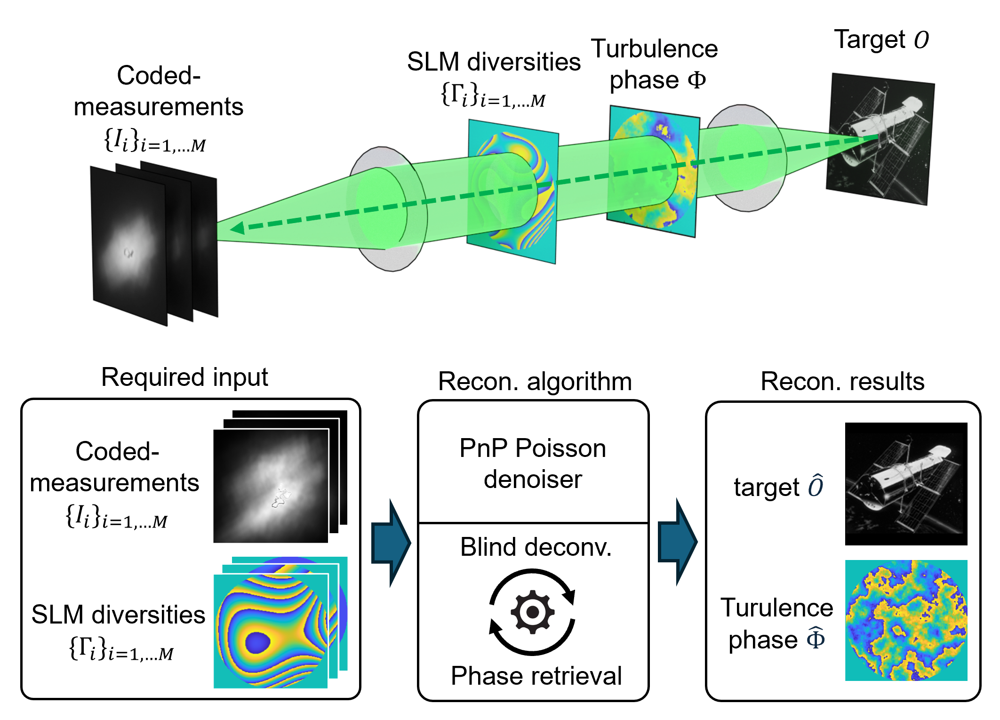
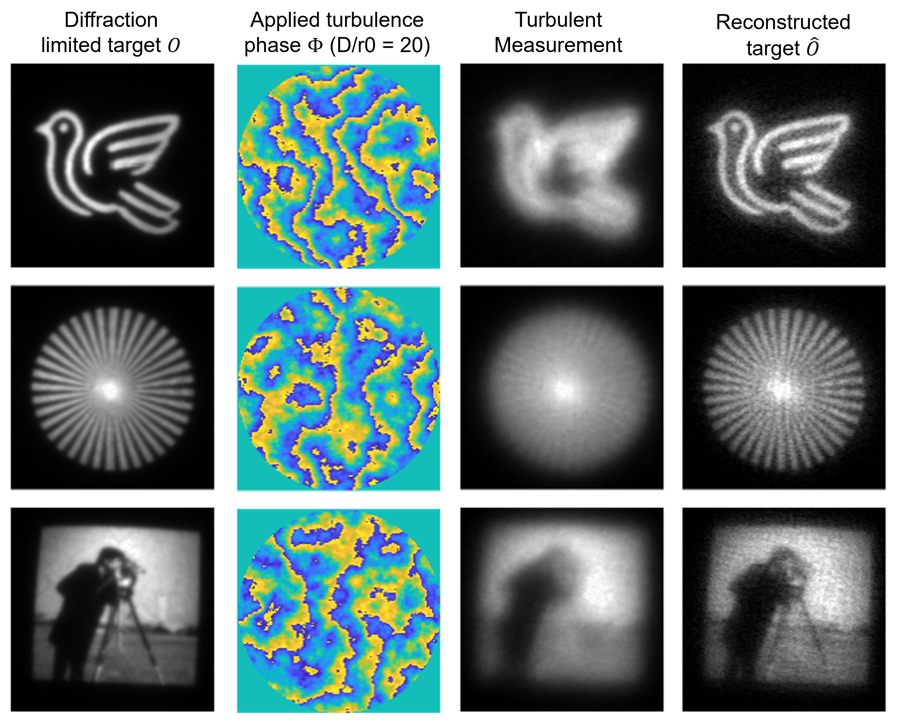

| Seungman Choi | Peter Menart | Andrew Schramka | Shubhanka Jape | Leif Bauer | In-Yong Park | Zubin Jacob* |
* Corresponding author: zjacob@purdue.edu
Telescopic imaging through Earth’s turbulent atmosphere becomes especially challenging under extreme low-light conditions, where only a few photons reach the detector. Traditional correction methods often fail in these regimes, collapsing under strong distortions and photon scarcity. We present TAP-BD—a turbulence-aware Poisson blind deconvolution framework—engineered specifically for these harsh scenarios. By encoding wavefront diversity using random phase patterns and leveraging a customized Poisson denoiser, TAP-BD extracts maximal information from limited photons. An iterative ADMM-based optimization then jointly reconstructs both the underlying scene and the turbulence-induced aberrations. Even in the presence of severe turbulence, TAP-BD delivers sharp, accurate reconstructions—pushing the frontier of photon-efficient imaging for astronomy, surveillance, and beyond.

Figure: TAP-BD reconstruction pipeline
[Case Study 1] Telescopic imaging under severe atmospheric turbulence
Video: TAP-BD iterative update for severe turbulence (Turbulence strength D/r0 = 45, M = 100)
[Case Study 2] Microscopic imaging

Figure: TAP-BD experimental reconstruction (M=24)